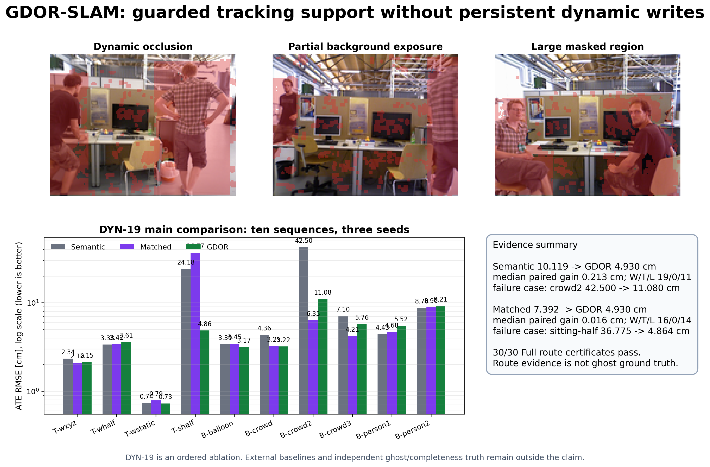

GDOR-SLAMProject Briefing
Dynamic RGB-D Gaussian SLAM
GDOR-SLAM
Guarded Dynamic Observation Recovery：恢复 tracking 支持，但不授予长期地图写入权。
DYN-19 evidence package · TMM pre-submission artifact · 2026-10-23
GDOR-SLAMContribution
Research question动态区域不能全用，也不应全丢
将动态区域中的背景证据转化为有条件、瞬态、可审计的 tracking 支持，并把 persistent mapping 设为独立准入决策。
- Guarded recoveryTemporal depth、flow、risk 与 camera-motion checks。
- Adaptive support在 failure interval 补足背景特征。
- Certified isolation审计 recovered support 是否泄漏到 persistent map。
90/90Main
120/120Mechanism
72/72Mapping
30/30Certificates pass
GDOR-SLAMMethod
Method overview从动态候选到受限恢复，再到双路由

瞬态 tracking 支持与 persistent Gaussian map admission 独立处理。
GDOR-SLAMRoute invariant
Tracking / mapping separation帮助当前位姿，不代表获得长期地图写入权
动态候选
语义 mask 保持高召回；默认排除。
→
Transient recovery
Depth、flow、risk、camera motion 与 adaptive FAST 决定 tracking 支持。
→
Persistent blocked
不得用于 Gaussian 初始化、更新、densification 或持久写入。
Recovered support 只能影响瞬态相机估计，不得获得 persistent map admission。
GDOR-SLAMDYN-19 protocol
Experiment matrix多 seed、全 claim-bearing sequences、三类证据
90/90
Main tracking
3 configs × 10 sequences × 3 seeds
120/120
Mechanism
4 configs × 10 sequences × 3 seeds
72/72
Mapping
4 scenes × 3 seeds × 3 configs × 2 pose modes
包含
tum_sitting_halfsphere；均值旁同时报告 median、W/T/L 和 failure case。GDOR-SLAMTracking
ATE RMSE · cm · lower is betterFull 的主要价值是 failure-regime rescue
Semanticmedian +0.213 · 19/0/11
10.119
MapMatchedmedian +0.016 · 16/0/14
7.392
GDOR Full30 paired cells
4.930
| Comparison | Mean ATE | Full | Median | Cell W/T/L | Seq W/T/L |
|---|---|---|---|---|---|
| Semantic → Full | 10.119 | 4.930 | +0.213 | 19/0/11 | 7/0/3 |
| MapMatched → Full | 7.392 | 4.930 | +0.016 | 16/0/14 | 4/0/6 |
GDOR-SLAMFailure cases
Where the gain comes from两个显著失败区间主导平均改善
Bonn crowd2
42.500 → 11.080 cmFull vs Semantic
TUM sitting_halfsphere
36.775 → 4.864 cmFull vs MapMatched

准确结论是 failure-regime rescue，不是所有序列统一领先。
GDOR-SLAMMechanism
Ordered ablation固定顺序增量，不等于独立因果分解
10.119Semantic
7.392MapMatched
3.859T+M
6.377T+F+M
4.907T+F+R+M
4.930Full
4.060Full-NoM
30/30 pass
GDOR Full
未观察到 recovered support 进入 persistent mapping。
30/30 fail
Full-NoM
90,790,462 recovered-support pixels 被准入持久地图。
GDOR-SLAMMapping
Static-view PSNR共同视角下的有限 preservation diagnostic
Semantic18.866 dB
MapMatched18.990 dB
GDOR Full19.763 dB
| Comparison | Mean gain | Median | W/T/L |
|---|---|---|---|
| Full vs Semantic | +0.897 dB | +0.544 dB | 9/0/3 |
| Full vs MapMatched | +0.773 dB | +0.515 dB | 11/0/1 |
不能改写为零 ghost、零污染或完整背景已证明；仍需独立人工/外部真值。
GDOR-SLAMQualitative mapping
Protocol-300 views动态场景的共同 checkpoint 定性对比

外部方法数字与本地 protocol-matched 结果保持来源隔离。
GDOR-SLAMEvidence & artifact
Traceability已证实结论与待补证据分开报告
- ✓ DYN-19 本地基线下 ATE 与 static-view PSNR 改善
- ✓ 30/30 certificates 支持 route invariant
- × ordered ablation 不证明独立因果效应
- × proxy ghost/completeness 不等同独立真值
- × 尚非官方 DyPho-SLAM protocol-matched superiority
- 论文 PDF
paper/GDOR-SLAM_TMM_v5r6_preprint.pdf - DYN-19 release
dyn19-results-20260914 - Evidence manifest
paper/EVIDENCE_MANIFEST.md - Validation
paper/reports/evidence_validation.json - Traceability
TRACEABILITY.md
GDOR-SLAMConclusion
Takeaway恢复 tracking 支持，
但不授予长期地图写入权
DYN-19 支持 guarded recovery、failure-regime rescue 与 separate tracking/mapping routing。
4.930 cmFull mean ATE
19/0/11cell W/T/L
19.763 dBstatic PSNR
30/30certificates pass